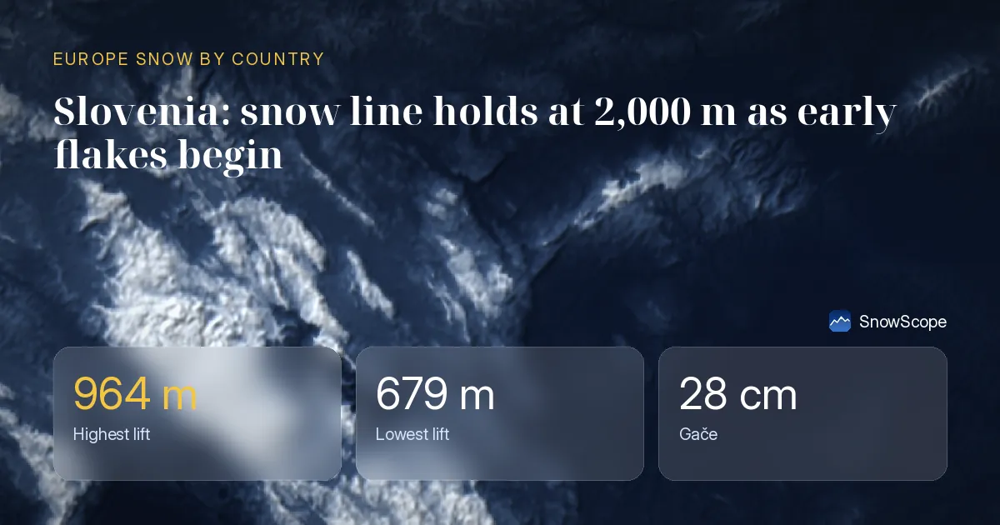

Slovenia: snow line holds at 2,000 m as early flakes begin
Snow in Slovenia sits cleanly at one elevation boundary: above 2,000 m the mountains are mostly white, below that they are mostly bare. After a week of steady gain, the snow cover stopped growing yesterday, though a significant system arrives Thursday.
See the live snow forecast for Gače in the SnowScope appSnow depth, powder alerts and the 3D map, free.
Where the snow line sits
Walk up the Slovenian mountains and you hit a sharp transition. Below 2,000 m, only patchy white touches the ground—even at 1,500 m to 2,000 m, where you might expect continuous cover, only 35 percent of the slope shows snow. The air is still warm enough to melt what falls. Cross that 2,000 m line and the picture flips: 74 percent of the terrain is snow-covered, with an average depth of 6 cm according to our model.
This is where you find the best skiing right now. The Julian Alps, the highest peaks in the country, have picked up 3 cm in the past three days. At lower elevations—1,000 m to 1,500 m—the snow is thin and fragile, often just 1 cm on average. Even that disappears fast when the sun strengthens. The highest resorts, like Vogel at 1,731 m, have enough base to stay skiable, but the low-altitude areas are racing against autumn warmth.
| Resort | Snow depth | New snow, 72 h | Coming, next days | Top |
|---|---|---|---|---|
| Gače | 28 cm | 0 cm | 0 cm | 964 m |
| Vogel | 26 cm | 1 cm | 0 cm | 1,731 m |
| Velika planina | 24 cm | 0 cm | 0 cm | 1,664 m |
| Rogla | 17 cm | 0 cm | 0 cm | 1,511 m |
| Golte | 16 cm | 0 cm | 0 cm | 1,570 m |

The elevation bands explained
Breaking it down by height bands, the story is clear. At 500 m to 1,000 m—the foothills—just 12 percent of the land is white and the average depth is 1 cm. That is not useful snow. Jump to 1,000 m to 1,500 m and you get 17 percent coverage with the same thin 1 cm average.
At 1,500 m to 2,000 m you see the transition zone: coverage rises to 35 percent and depth to 2 cm. Then, above 2,000 m, the air is cold enough to preserve what falls. That is where 74 percent of the ground is covered and depths reach 6 cm. If you plan to ski this week, stay high.
Overall area: a week of rapid gain
One week ago, only 220 km2 of Slovenia was white. Today, 1,130 km2 is snow-covered. That is a jump of 910 km2 in seven days—a dramatic shift from bare slopes to a partly snow-dressed country. Yesterday the coverage shrank by 80 km2, the first pullback after steady accumulation, likely due to daytime melt on south-facing slopes below 2,000 m.
In total, 15 of the 27 Slovenian ski resorts now have measurable snow on the ground. That is half the network, and all those resorts sit above 1,000 m where yesterday's loss was modest. The white share across the whole modelled area is 15 percent—low by winter standards, but high for mid-November.
Which resorts lead
Gače, the low-altitude resort at 964 m, still holds the deepest pack: 28 cm measured at the station on 16 November. That is well above normal for this date and shows how much fresh snow fell here early in the week. Vogel, the Alpine resort at 1,731 m, sits close behind with 26 cm and has picked up 1 cm in the past three days. Velika planina at 1,664 m has 24 cm.
Below that tier, Rogla and Golte—both above 1,500 m—have thinner bases of 17 cm and 16 cm respectively, and they have not gained snow in the past three days. The difference is height and exposure. The highest peaks continue to accumulate; the mid-altitude resorts are losing mass to melt. By next week, the balance may shift as fresh powder falls onto the high ridges.
What comes next
Thursday 19 November is the trigger date. Our model predicts 6 cm of new snow that day—the heaviest single day in the coming week. If that forecast holds, the snowiest day of the next seven days will be 19 November, and the total for the next week could reach 7 cm. That fresh powder will land on existing bases and should deepen the snow above 2,000 m significantly.
The following week, 24 to 30 November, looks even richer: up to 33 cm is forecast. That is when the winter pattern really begins to take shape. For now, Thursday's storm is the event to watch.
Context: a strong start
Compared to past Novembers, this is good timing. At Gače, the typical depth in mid-November is zero; today it is 3 cm by the same measure. At Vogel, the usual depth equals what we see now. Five of the five major resorts tracked are running above their November average, and four of them are above normal by a margin.
Nearby Austria is running much deeper—Austria's leader, Kaprun, has 83 cm and faces 50 cm more snow in the next week. Italy's Monterosa Ski holds 99 cm. Slovenia is behind that tier, but the trajectory is clear. Use this week to ski high. By late November, the low resorts may become viable again as the snow deepens.
Tips for skiers
- Stay above 2,000 m this week. That is where 74 percent of the ground is white and depths reach 6 cm. Lower elevations are patchy and thinning daily due to melt.
- Expect the best skiing on 19 November after the main snow pulse arrives. Fresh powder will collect most heavily on the high ridges and summits.
- Watch for thin snow cover over rock and ice below 1,500 m. Even 1 cm average depth means many runs are still brown or exposed. Test terrain carefully.
- By late November, the second storm system (24–30 November) may make lower resorts viable. If you are flexible, consider waiting a few days rather than skiing now on bare slopes.
- Check the official avalanche bulletin for the Julian Alps and high peaks before going off-piste, especially after Thursday's new snow.
About these numbers
Resort snow depths are the deepest snow on the resort's upper slopes from the SnowScope snow model (about 1 km, run of 16 November); they are estimates for an area, not a measurement at one point. Station values are measurements on the date shown. Forecasts can change. Always read the official avalanche bulletin before going off-piste.
Cite this report
For research, teaching or the press: the numbers and charts are free to reuse under CC BY 4.0 with this citation.
SnowScope (2026), Slovenia: snow line holds at 2,000 m as early flakes begin, https://snowscope.app/blog/en/2026/11/slovenia-snow-report-16-november-2026.html, accessed 2026-11-16
SnowScope (Atlas Labs). (2026, November 16). Slovenia: snow line holds at 2,000 m as early flakes begin. SnowScope snow reports. https://snowscope.app/blog/en/2026/11/slovenia-snow-report-16-november-2026.html
BibTeX
@misc{snowscope2026sloveniasnowreport16nove,
author = {{SnowScope (Atlas Labs)}},
title = {Slovenia: snow line holds at 2,000 m as early flakes begin},
year = {2026},
month = nov,
howpublished = {\url{https://snowscope.app/blog/en/2026/11/slovenia-snow-report-16-november-2026.html}},
note = {Published 2026-11-16 20:42 UTC; accessed 2026-11-16}
}· CC BY 4.0 · Methods, data and tools →
Gače: snow and temperature by height, this winter vs last (tools) →
Follow Gače
Free: a message when fresh snow is coming, and the forecast every morning.
More snow reports

Bogus Basin snow check for Boise skiers on 13 November 2026: no snow on the ground yet, rain and mixed snow this weekend with a snow level near 6,300 to 6,800 ft, then colder air and about 8 in at the summit by next week.

Alpental snow forecast for 13 November 2026: about 1 in on the upper mountain, rain almost to the summit this weekend with a snow level near 5,400 to 5,600 ft, then 4 to 5 in of mixed rain and snow up top next week.